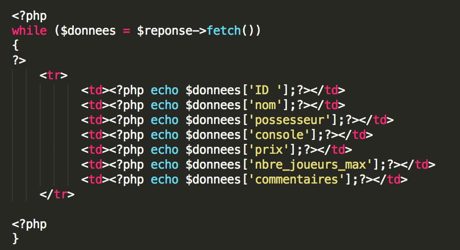

Langages utilisés : HTML / CSS / PHP
Le HTML est un langage de balisage délimitées par des crochets < et > une balise est ouvrante et fermante.
CSS de l'anglais Cascading Style Sheets, forment un langage informatique qui décrit la présentation des documents HTML et XML
PHP: Hypertext Preprocessor, plus connu sous son sigle PHP, est un langage de programmation libre, principalement utilisé pour produire des pages Web dynamiques via un serveur HTTP
Nous avons le corps principal du code que j’ai nommé : index.html À l’intérieur il y a 4 parties : Les Données, la map, le tableau de bord et le matériel.Dans index.html:

Les "class" renvoyent à des fonctions CSS. Elles servent à améliorer visuellement le texte, on peut faire appel à des "class" sur plusieurs endroits.
class="nav-link" est utiliser pour chaque boutton présent sur la partie droite du site web.
la class="fa fa-fw fa-dashboard" va chercher le symbole à coté du nom
ensuite j'ai fais une description du projet avec une photo
Dans données :
Cette fonction permet d'accéder à la base de donnée
Les connexions sont établies en créant des instances de la classe de base de PDO.
Nous avons eu besoin de faire appel à une fonction "while" pour pouvoir récupérer les données et les mettres dans un tableau.

La boucle va chercher dans la base de données les informations tant qu'il y a une réponse
Voici les fonctions principal :